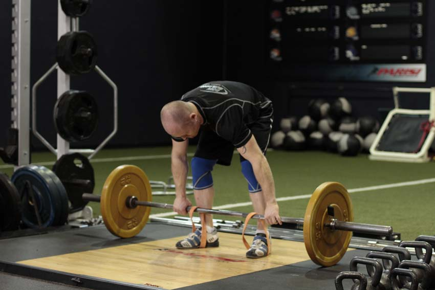
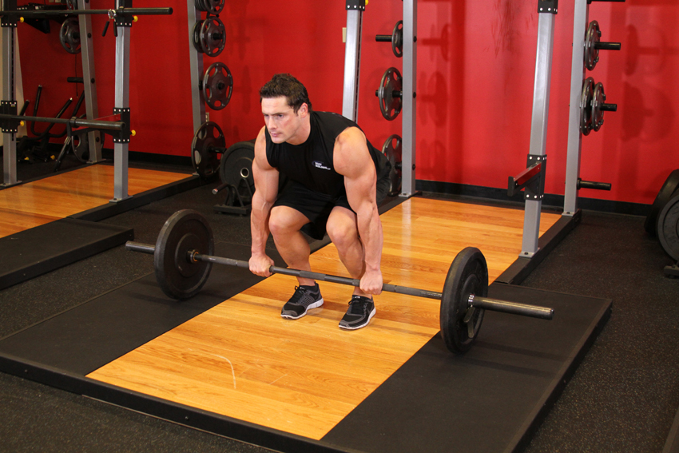

<!DOCTYPE html PUBLIC "-//W3C//DTD XHTML 1.0 Strict//EN" "http://www.w3.org/TR/xhtml1/DTD/xhtml1-strict.dtd">
<!--
Design by Free CSS Templates
http://www.freecsstemplates.org
Released for free under a Creative Commons Attribution 2.5 License

Name       : Open-Air
Description: A two-column, fixed-width design with dark color scheme.
Version    : 1.0
Released   : 20120818

-->
<html xmlns="http://www.w3.org/1999/xhtml"/>
<?php
session_start();
include('mygymdbConnect.php');
include('SignUp.php');
?>
<html>
    <head>
        <title> MyGym</title>
        <div style="position :absolute;top:20px;left:40px">
            <p><h2>MY<br/> 
                    GYM 
                    <br/></h2></p></div>
        <div style="position: absolute ;left:  200px; top: 20px;"> </div>
        <div style="position:absolute;top:37%;left:35%"/>
        <link href="http://fonts.googleapis.com/css?family=Oswald:400,300" rel="stylesheet" type="text/css" />         

        <link href="style.css" rel="stylesheet" type="text/css" media="screen" />
        <a href="home.php" style="text-decoration: none;color: black;font:serif;font-weight: bold;  ">Home |</a>
        <a href="About.html" style="text-decoration: none;color: black;font:serif;font-weight: bold;  ">About |</a>
        <a href="sign up.html" style="text-decoration: none;color: black;font:serif;font-weight: bold;  ">Sign up |</a>
        <a href="Activities.html" style="text-decoration: none;color: black;font:serif;font-weight: bold;  ">Activities |</a>
        <a href="Trainers.html" style="text-decoration: none;color: black;font:serif;font-weight: bold;  ">Trainers |</a>
        <a href="classes.html" style="text-decoration: none;color: black;font:serif;font-weight: bold;  ">Classes |</a>
        <a href="Training.html" style="text-decoration: none;color: black;font:serif;font-weight: bold;  ">Train |</a>   

    </head>

    <body>
        <div style="position: absolute;left: -300px">
            <table  cellpadding="10" cellspacing="10" height="400px" width="1200px">
                <tr><td></img></td>
                    <td><b>Description</b><br></br>
                        The muscular system of the lower abdomen, including the pelvis, 
                        is separated from that of the chest by the muscular wall of the 
                        diaphragm—so critical to breathing—and lies somewhat exposed between 
                        the protective bones of the ribs above and the pelvic girdle behind. 
                        As such, skeletal muscles across the lower abdomen play a critical role
                        in protecting the delicate organs within the abdomen, in addition to providing 
                        propulsion and stability Attached to the pelvis are muscles of the abdominal wall,
                        the buttocks, the lower back, and the insides and backs of the thighs.
                        This includes the gluteus maximus and the rest of the posterior thigh muscles that 
                        connect the lower abdomen with the legs in support of the body's weight and in its propulsion
                        . Other abdominal muscles serve as flexors of the trunk on the hip as well as of the thigh 
                        at the hip joint, or rotate the hip and thigh together.
                    </td></tr>
            </table></div>
        <div style="position: absolute;left: -200px;top: 500px" >
            <table border="2"  cellpadding="10" cellspacing="10" align="center">
                <tr><td><b>EXERCISES</b></td></tr>
                <tr><td></img></br>
                        </img></td>
                    <td><b>Cat Stretch</b>
                        </br>1-Position yourself on the floor on your hands and knees.
                        </br>2-Pull your belly in and round your spine, lower back, shoulders, and neck, letting your head drop.
                        </br>3-Hold for 15 seconds.
                    </td>
                </tr>
                <tr><td></img></br>
                        </img></BR>
                        </img></td>
                    <td><b>Deadlift with Bands</b>
                        </br>1-To deadlift with short bands, simply loop them over the bar before you start, and step into them to set up. For long bands, they will need to be anchored to a secure base, such as heavy dumbbells or a rack.
                        Approach the bar so that it is centered over your feet. You feet should be about hip width apart. Ensure that the bands are under the back half of your foot (for short bands), directly where you are driving into the floor. Bend at the hip to grip the bar at shoulder width, allowing your shoulder blades to protract. Typically, you would use an overhand grip or an over/under grip on heavier sets.     
                        </br>2-With your feet, and your grip set, take a big breath and then lower your hips and bend the knees until your shins contact the bar. Look forward with your head, keep your chest up and your back arched, and begin driving through the heels to move the weight upward. After the bar passes the knees, aggressively pull the bar back, pulling your shoulder blades together as you drive your hips forward into the bar.
                        </br>3-Lower the bar by bending at the hips and guiding it to the floor.
                    </td>
                </tr>
                <tr><td></img></br>
                        </img></td>
                    <td><b>Hyperextensions With No Hyperextension Bench</b>
                        </br>1-With someone holding down your legs, slide yourself down to the edge a flat bench until your hips hang off the end of the bench. Tip: Your entire upper body should be hanging down towards the floor. Also, you will be in the same position as if you were on a hyperextension bench but the range of motion will be shorter due to the height of the flat bench vs. that of the hyperextension bench.
                        </br>2-With your body straight, cross your arms in front of you (my preference) or behind your head. This will be your starting position. Tip: You can also hold a weight plate for extra resistance in front of you under your crossed arms.
                        </br>3-Start bending forward slowly at the waist as far as you can while keeping your back flat. Inhale as you perform this movement. Keep moving forward until you almost touch the floor or you feel a nice stretch on the hamstrings (whichever comes first). Tip: Never round the back as you perform this exercise.
                        </br>4-Slowly raise your torso back to the initial position as you exhale. Tip: Avoid the temptation to arch your back past a straight line. Also, do not swing the torso at any time in order to protect the back from injury.
                        </br>5-Repeat for the recommended amount of repetitions.
                    </td>
                </tr>
                <tr><td></img><br></br>
                        </img>  </td>
                    <td><b>Barbell Deadlift</b>
                        </br>1-Stand in front of a loaded barbell.
                        </br>2-While keeping the back as straight as possible, bend your knees, bend forward and grasp the bar using a medium (shoulder width) overhand grip. This will be the starting position of the exercise. Tip: If it is difficult to hold on to the bar with this grip, alternate your grip or use wrist straps.
                        </br>3-While holding the bar, start the lift by pushing with your legs while simultaneously getting your torso to the upright position as you breathe out. In the upright position, stick your chest out and contract the back by bringing the shoulder blades back. Think of how the soldiers in the military look when they are in standing in attention.
                        </br>4-Go back to the starting position by bending at the knees while simultaneously leaning the torso forward at the waist while keeping the back straight. When the weights on the bar touch the floor you are back at the starting position and ready to perform another repetition.
                        </br>5-Perform the amount of repetitions prescribed in the program.
                    </td>
                </tr>
            </table>
        </div>
    </body>
</html>